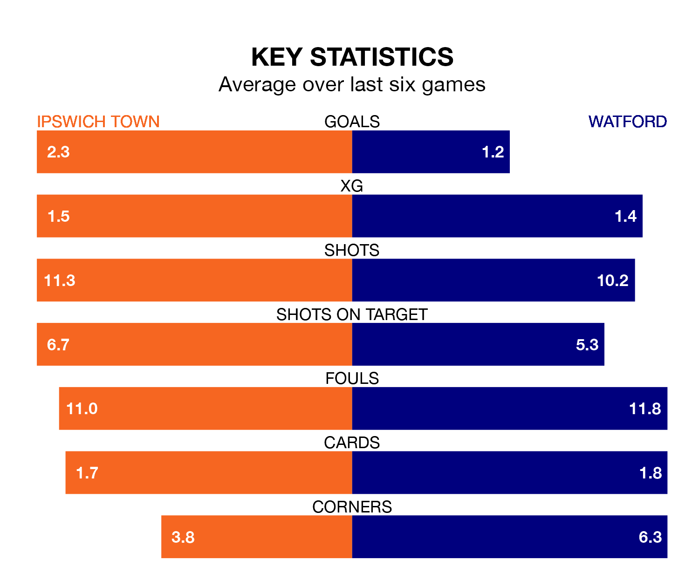

Ipswich Town host Watford in Wednesday's late match at Portman Road looking to bounce back from defeat last time out in EFL Championship.
The Blues, who sit second in the league after 41 games, fell to a 1-0 away defeat to Norwich City on Saturday.
They face a Watford side who secured a draw in their last match, a 0-0 tie with Preston North End, and who sit 14th in the table.
With 84 goals in 41 games so far this season, Ipswich are the league's highest scorers with 2.0 goals per game. And they are conceding at an average rate, letting in 52 goals at a rate of 1.3 per game.
Watford are also above average scorers, with 1.4 goals per game, compared to a league average of 1.3. They have conceded 1.3 goals per game.
In Václav Hladký, Town can rely on one of the league's safest pair of hands. He has kept 13 clean sheets in his 41 appearances this season, and only two other 'keepers – Leeds United's Illan Meslier and West Bromwich Albion's Alex Palmer – have been able to prevent the opposition scoring on more occasions in EFL Championship.
In the Hornets's net, Daniel Bachmann has eight clean sheets in 22 games. He has conceded a goal every 79 minutes, only slightly more often than the 82 minutes between goals for Hladký.
The Blues are in reasonable form in EFL Championship, with four wins and two losses from their last six games.
With a win and four draws over that period, the visitors' form is worse – they have taken seven points from 18, compared to the home team's 12.
Updated: 14:47 (UTC), 09/04/24